Sakana AI 联合几所大学搞了个 AI-Scientist-v2。
从提出研究想法、搜索文献、设计实验、写代码跑实验到最终写出完整论文，全程不需要人插手。
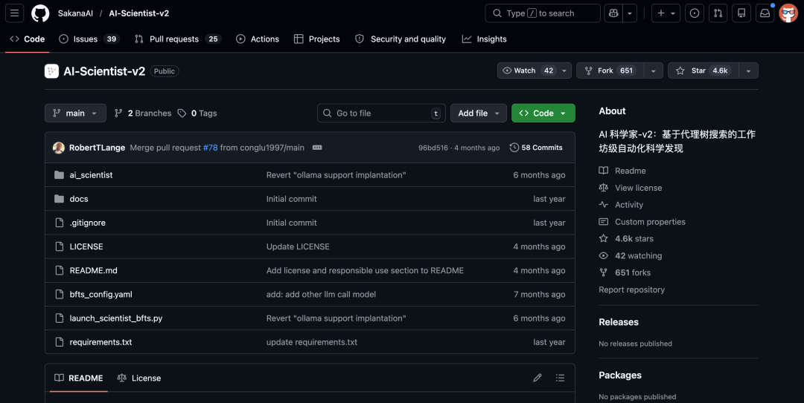
最猛的是它生成的论文通过了 ICLR 2025 Workshop 的同行评审，评分 6.33，超过了 55% 的人类投稿。
这项成果已经在 2026 年 3 月正式发表在 Nature 上了。
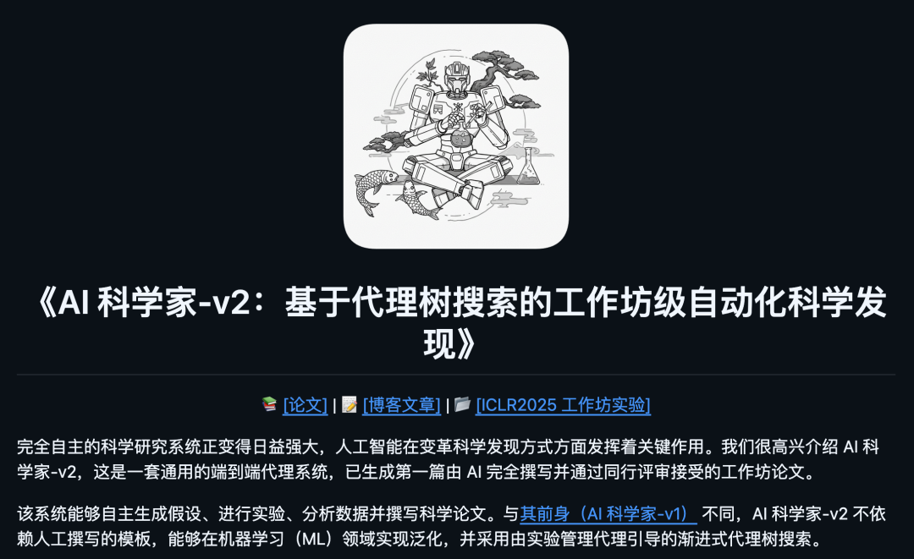
v2 跟上一代最大的区别是采用了渐进式 Agent 树搜索，不再局限于固定模板，可以并行探索多条研究路径找最优方案。
系统还内置了一个模拟 Area Chair 的自动评审器，准确率 69%，跟人类评审者差不多。
跑一次完整实验大概 20-25 美元，几个小时就能从想法到论文。
当然官方建议在 Docker 沙盒里跑，毕竟是 AI 自动生成的代码。
从提出研究想法到最终论文全程自动化，而且产出的论文能过同行评审，这个在学术圈引发了很大讨论。
开源地址：https://github.com/SakanaAI/AI-Scientist-v2VibeVoice 是微软开源的语音 AI 模型家族，包含语音合成和语音识别两大方向。
之前开源过一次，去年 9 月微软发现有人拿它做深度伪造，直接把仓库删了。
当时大概 8K Star。后来重新上架，Star 迅速飙到 3.5 万多。
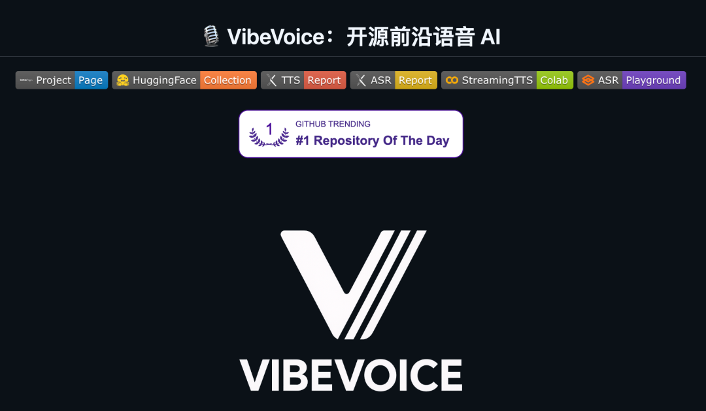
最亮眼的是超长音频处理能力。
TTS 模型单次能生成 90 分钟的多说话人对话音频，ASR 模型单次处理 60 分钟音频不用切片。
ASR 的输出也很智能，谁说的、什么时间说的、说了什么，一次推理全搞定。
还有个轻量级的实时 TTS 模型只有 0.5B 参数，首音频延迟约 300ms，消费级 GPU 就能跑。
如果你需要长音频转录或实时语音合成，目前开源领域很难找到比它更强的。
开源地址：https://github.com/microsoft/VibeVoiceHermes Agent 是 Nous Research 开源的自学习 AI Agent 框架。
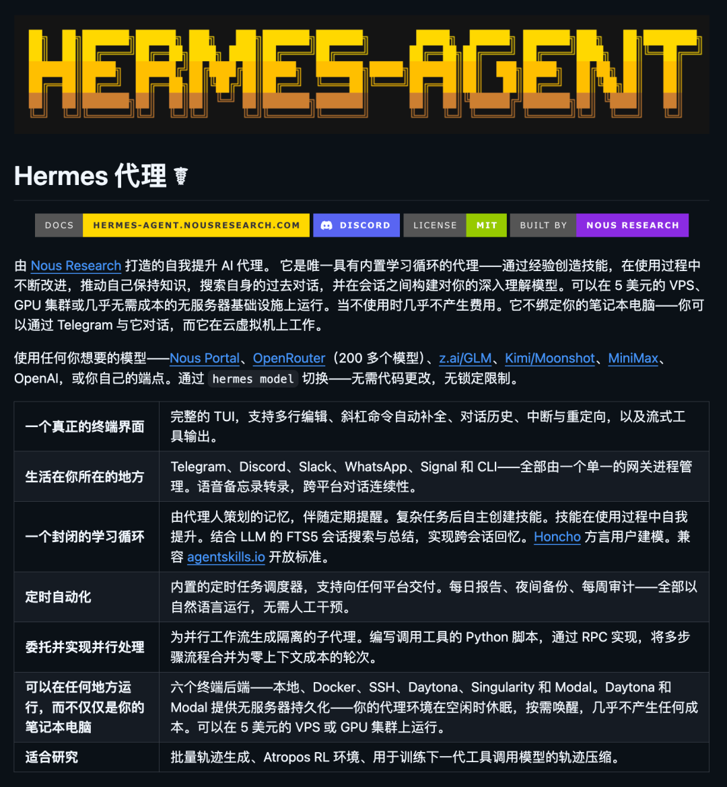
它跟一般 Agent 不一样，有个闭环学习系统哦。
完成任务后自动把经验提炼成可复用的技能文件，实际使用中还会持续优化。
用着用着它就越来越懂你。
支持 200 多个模型，一行命令就能切换提供商。
接入渠道也很广，一个 Gateway 进程就能对接飞书、企业微信啥的等十几个平台。
而且支持把你之前 OpenClaw 小龙虾的记忆、SKill啥的迁移过来。
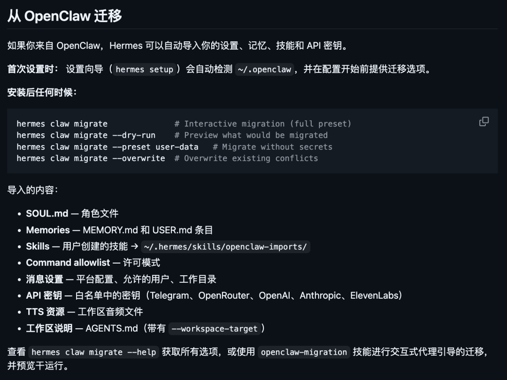
开源地址：https://github.com/NousResearch/hermes-agentOnyx 解决的是企业内部信息太分散的问题。
你公司的文档散落在 GitHub、Google Drive、Confluence、Slack 等地方，找个东西跟大海捞针一样。
Onyx 把 RAG 技术和这些数据源原生打通，员工直接用自然语言提问就能拿到精准答案。
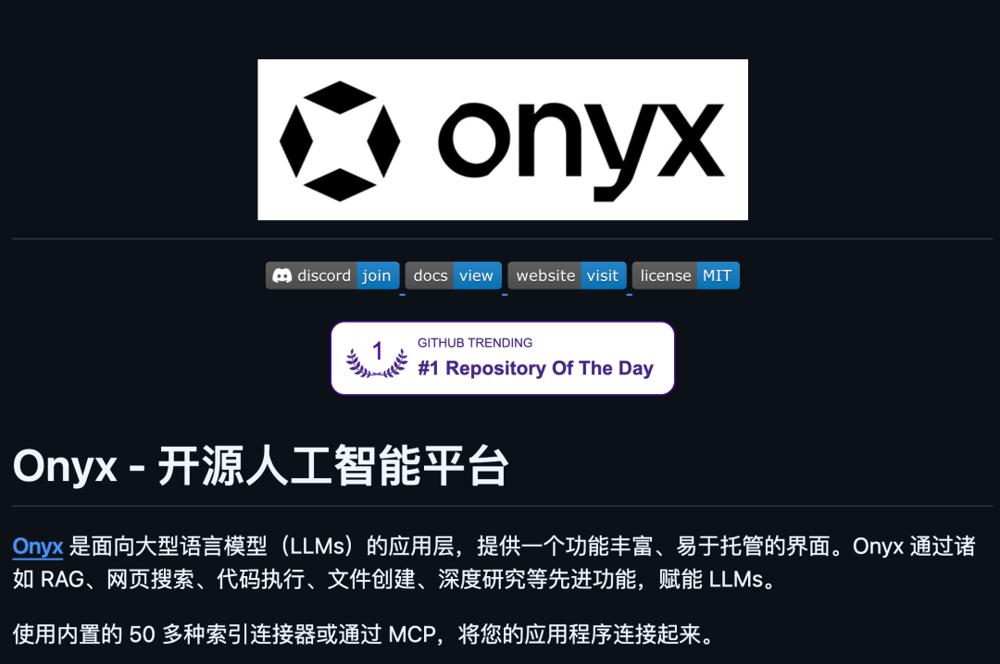
最早叫 Danswer，是 YC W24 批次的项目。
2025 年拿了 Khosla Ventures 和 First Round Capital 联合领投的 1000 万美元种子轮，Netflix、Ramp 等公司都在用。
除了企业搜索它还支持 Deep Research，在自建的排行榜上排名第一。
还有代码沙箱执行、语音模式、图像生成等能力，基本就是一个可以完全自托管的私有版 ChatGPT。
一条命令就能部署，目前 2.3 万Star。
开源地址：https://github.com/onyx-dot-app/onyxclaude-howto 是一份超全的 Claude Code 学习指南。
从基础概念到高级 Agent 编排全覆盖。
说白了官方文档只告诉你功能是什么，但没教你怎么组合使用。
这个项目就是来补这个缺口的。
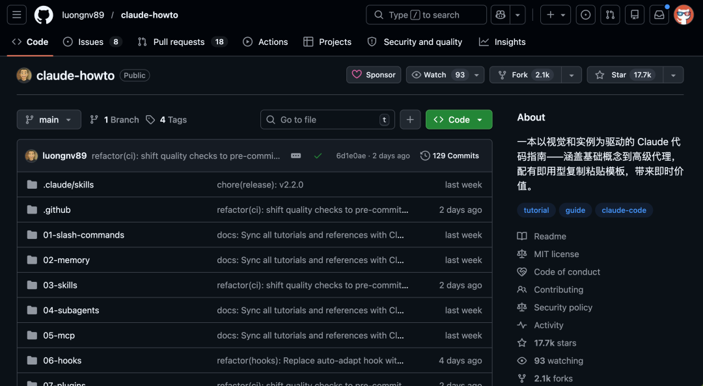
包含 10 个教程模块，总学习时长 11-13 小时，从初级到高级渐进式。
找个周末一遍看完。
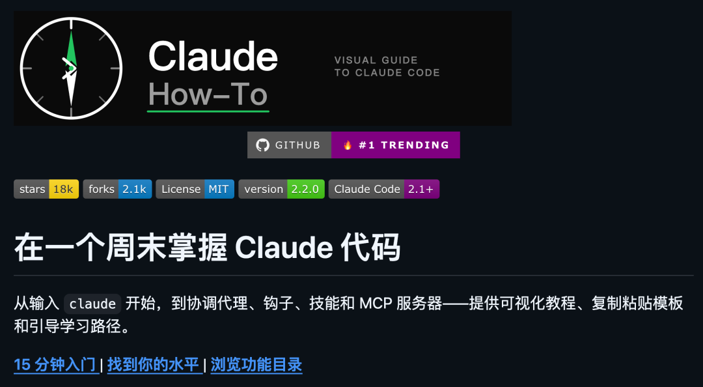
最好用的还是里面大量可以直接复制使用的生产级模板和可视化教程。
用起来零门槛，不需要装任何依赖，克隆下来把模板复制到项目目录直接就能用。还能生成 EPUB 电子书离线看。
目前 1.7w 的 Star，几乎跟着 Claude Code 版本同步更新。
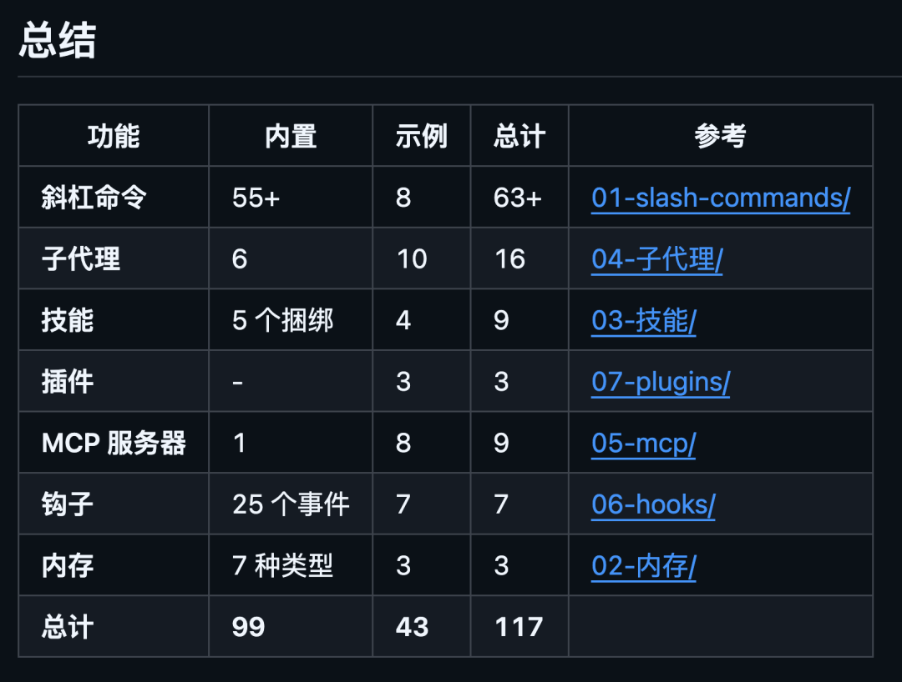
开源地址：https://github.com/luongnv89/claude-howto给 Claude Code 装上 19 个专业 Agent。
oh-my-claudecode 是 Claude Code 的多 Agent 编排系统，提供了 19 个专业化 AI Agent。
包括架构师、规划师、执行者啥的，自动把任务拆解分派给合适的 Agent 处理。
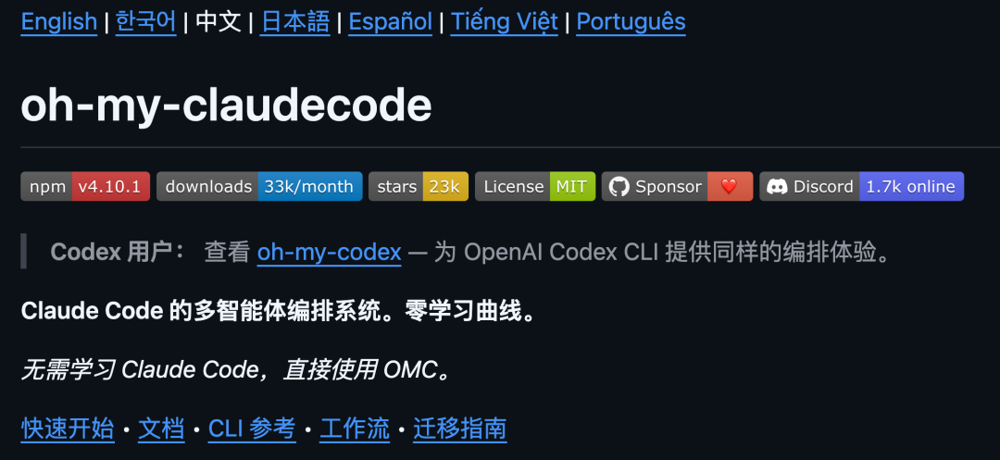
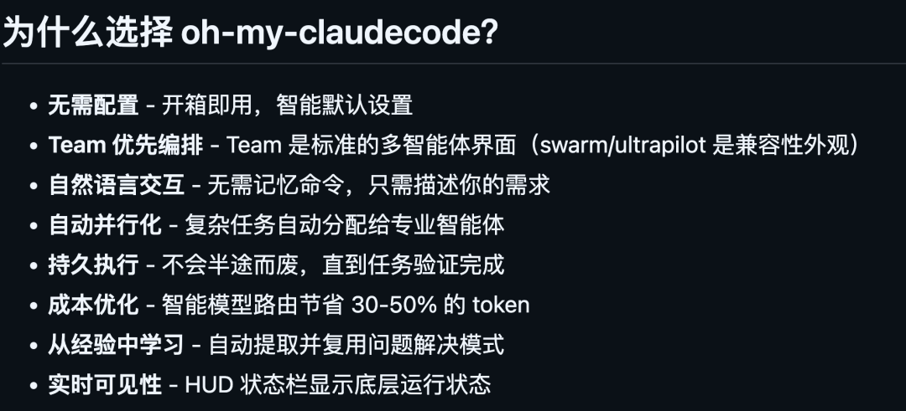
Team Mode 是最推荐的模式，一句话就能启动完整开发流水线，从需求分析到代码生成到测试验证全搞定。
还有智能模型路由，简单任务自动用 Haiku 省钱，复杂推理用 Opus，能节省 30-50% 的 Token。
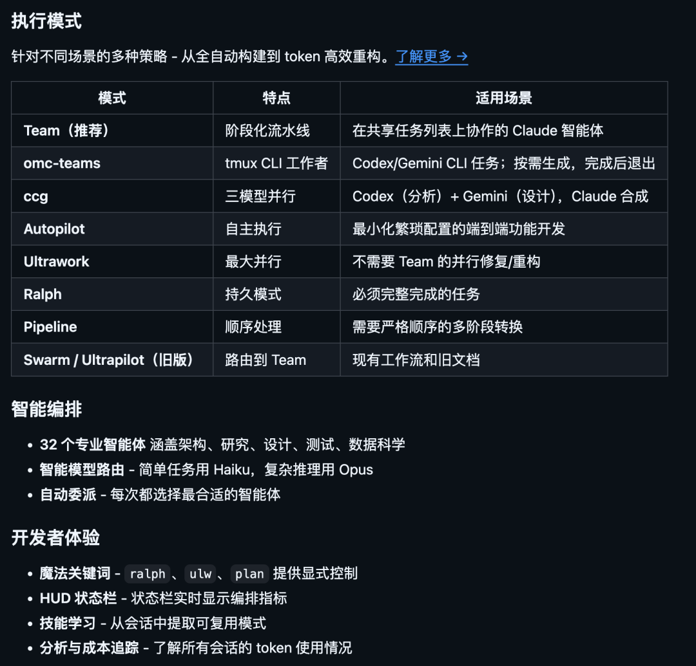
Skill 学习系统也挺有意思，能从开发过程中自动提取调试知识和模式，下次遇到类似问题自动注入上下文。
目前 1.1 万的 Star，通过 Claude Code 插件命令三步就能装好。
开源地址：https://github.com/Yeachan-Heo/oh-my-claudecodeoh-my-codex 跟上面那个 oh-my-claudecode 是同一个作者。
把类似的多 Agent 编排理念移植到了 OpenAI Codex CLI 上。
两个月从零冲到 1.4 万的Star，增长速度在开源项目里相当少见。
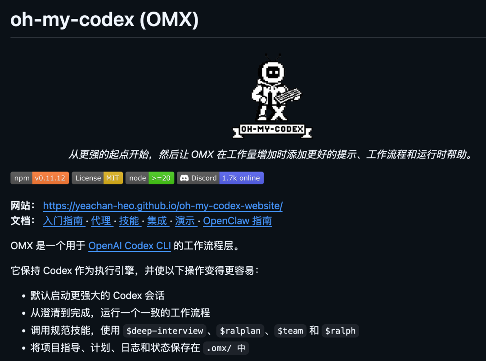
有 30 个专业 Agent 角色和 40 多个 Skill。
支持在 tmux 里启动最多 20 个 Worker 并行干活。
每个 Worker 在独立的 git worktree 里运行互不干扰。
还支持混合 Codex 和 Claude 的 Worker，可以同时用两家的模型协作。
npm install -g oh-my-codex 之后 omx setup 就行。
开源地址：https://github.com/Yeachan-Heo/oh-my-codex一句话搜遍全网最近 30 天的讨论，这个 Skill 破 10K Star 的速度史上最快。
last30days-skill 可以让你一句话搜遍全网最近 30 天的讨论。
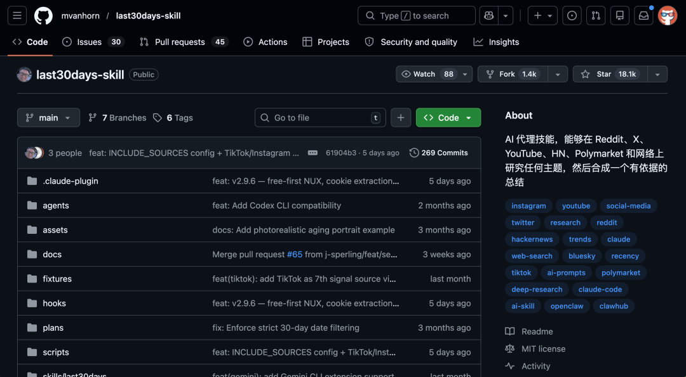
输入任意主题，自动在 Reddit、X、YouTube、TikTok、Instagram、啥的等 10 个信息源里搜索过去 30 天的相关讨论。
综合整理出一份带真实引用的研究报告。
它有个比较模式很实用，输入 Claude Code vs Codex 会并行跑 3 次研究，输出优劣势对比表。
这个工具能让你一句话就知道此刻社区里真实在讨论什么、在用什么。
比如我试了一下：
平均 70 秒完成一次研究。18000 Star，增长非常猛。
开源地址：https://github.com/mvanhorn/last30days-skillScreen Studio 是很火的商业屏幕录制美化工具，月费 29 美元。
OpenScreen 就是它的免费开源替代品。
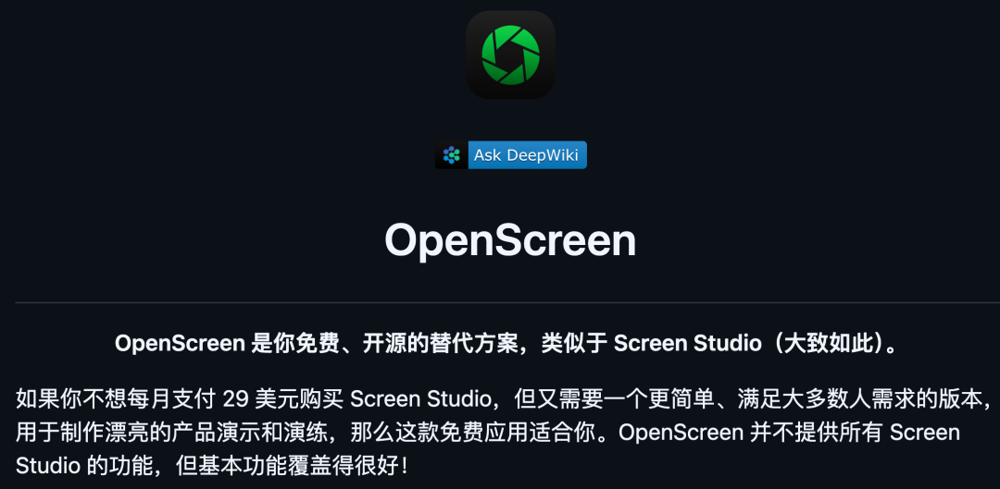
覆盖了录制屏幕、自动缩放平移动画、动态模糊、多种背景选项、标注添加等核心功能。
录制完成后可以添加手动缩放，自定义深度级别和时长，加上动态模糊效果。
一键输出类似专业 Demo 视频的效果。
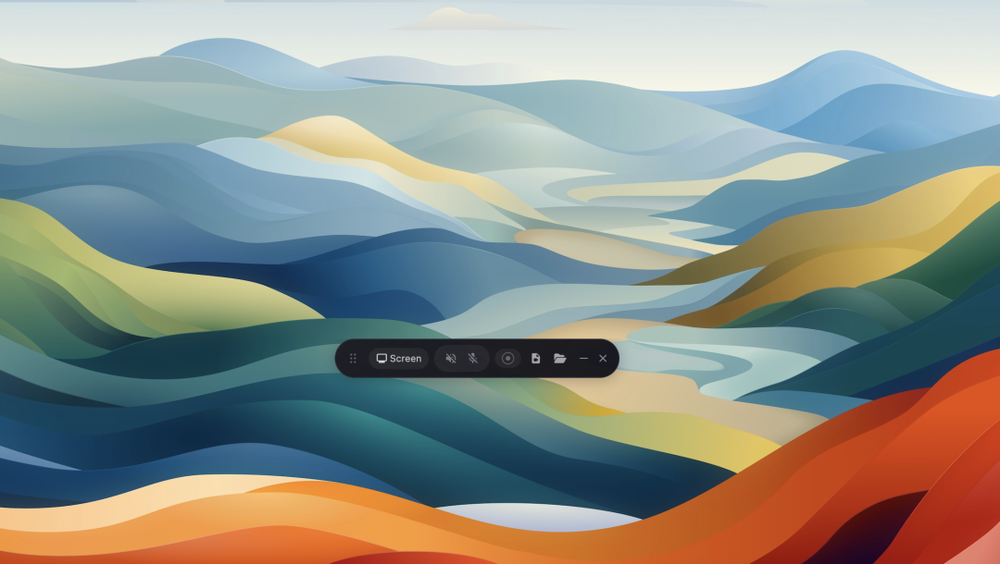
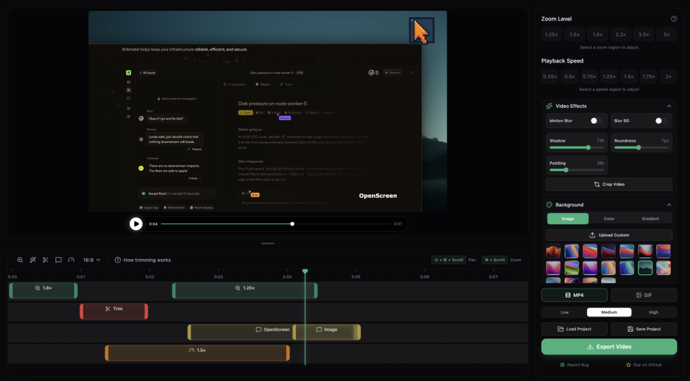
支持壁纸、纯色、渐变色、自定义图片作为背景，还能加文字箭头标注。
支持 macOS、Windows、Linux 三平台。
目前 1 万多Star，不过还是 Beta 阶段，Windows 上导出速度还有优化空间。
开源地址：https://github.com/siddharthvaddem/openscreen这个项目有点意思。
你拍照或上传 PDF 收据发票， AI 自动提取商品名称、金额、日期、商家、税额等全部信息，把纸质凭证变成结构化数据。
支持 170 多种法定货币和 14 种加密货币。
按历史汇率自动换算，对有跨境业务的自由职业者来说很实用。
而且 Prompt 完全可定制，你可以自定义提取规则、分类规则，甚至添加自定义字段，类似 Excel 加列。
而且支持本地 LLM，通过 Ollama 完全离线运行，数据不出你的电脑。
开源地址：https://github.com/vas3k/TaxHackerTimesFM 是 Google Research 的时序预测基础模型，在 1000 亿个真实世界时间点上做了预训练。
最新 2.5 版本只有 200M 参数，零样本预测准确率却比很多大模型还高，在 GIFT-Eval 基准上全指标排名第一。
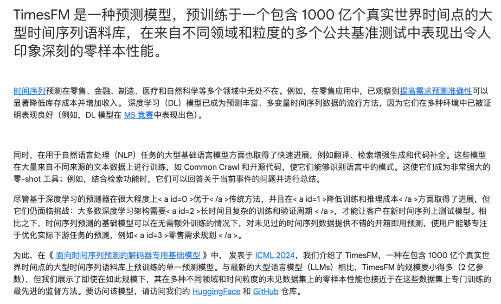
上下文窗口最长支持 16384 个时间步，比上一代提升了 8 倍。
而且不需要指定数据频率，模型会自动推断。
从 HuggingFace 一行代码加载权重就能用，200M 参数对硬件很友好，消费级 GPU 就能跑。
TimesFM 已经集成到 Google BigQuery 里了，企业用户可以直接在 SQL 里调用。
开源地址：https://github.com/google-research/timesfm12
点击下方卡片，关注逛逛 GitHub
这个公众号历史发布过很多有趣的开源项目，如果你懒得翻文章一个个找，你直接关注微信公众号：逛逛 GitHub ，后台对话聊天就行了：